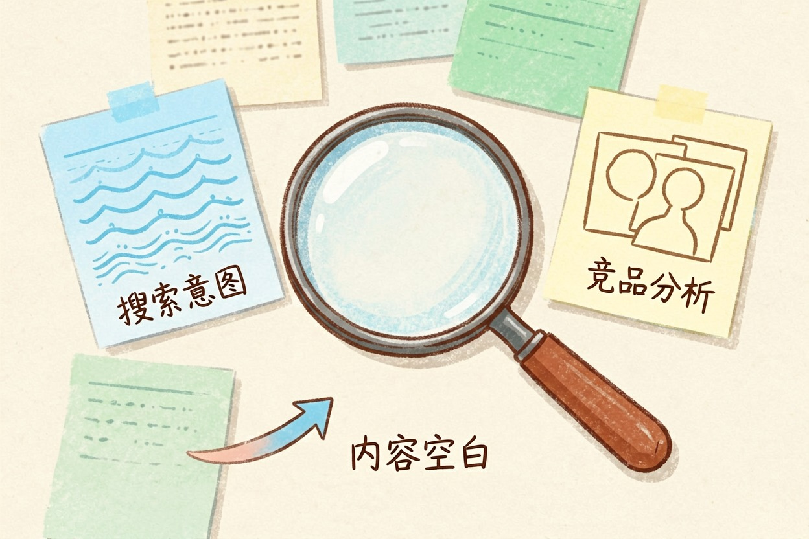
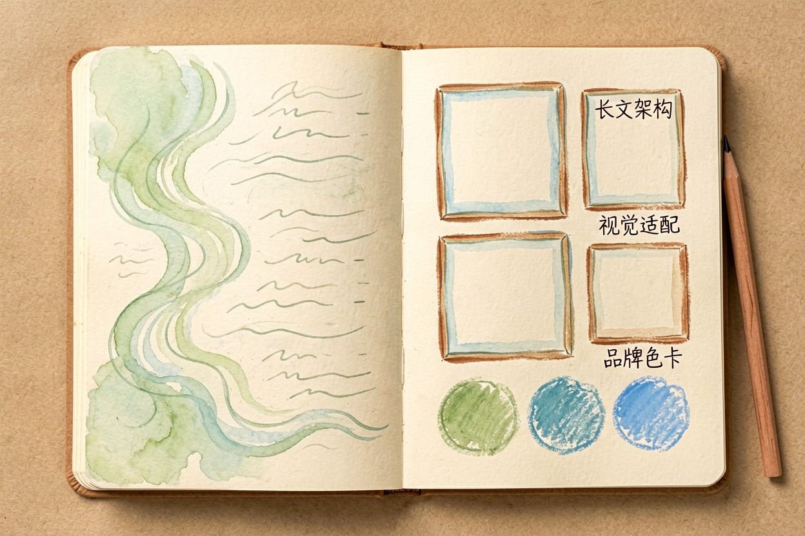
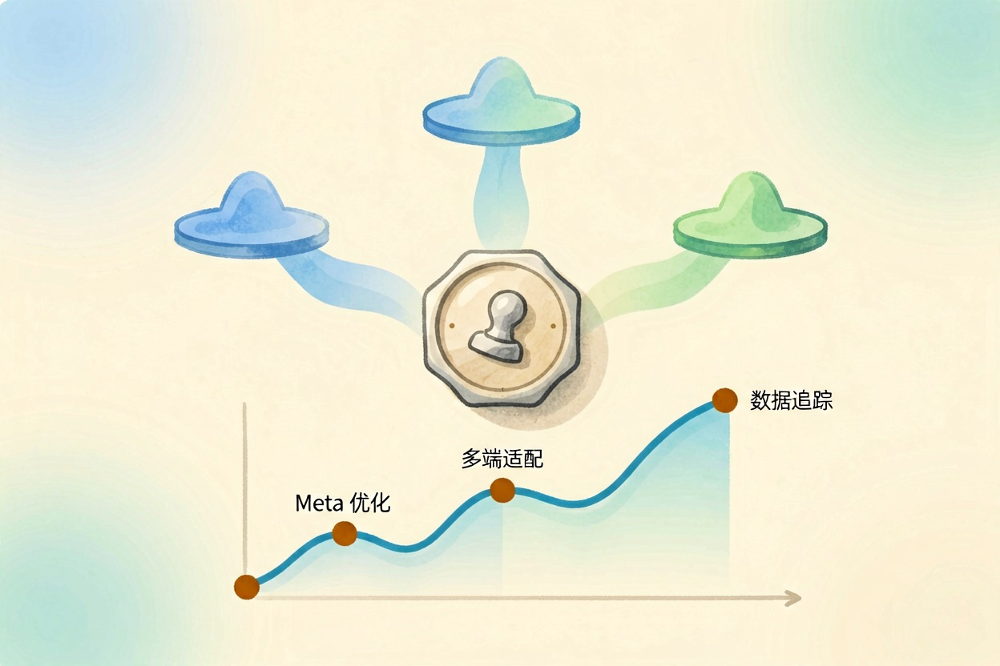
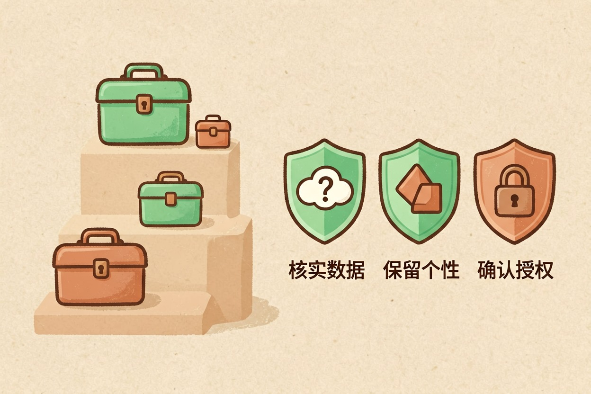
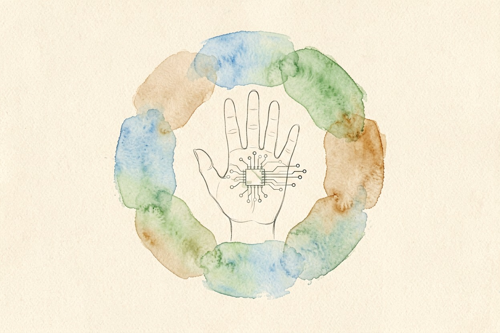

AI 内容创作完整指南：从选题到发布的完整工作流：2026 版
六步标准化工作流，从选题调研到发布优化，帮你一个人高效产出专业内容。
AI 时代，一个人就是一支内容团队。掌握从选题到发布的完整工作流，用 AI 将六小时压缩到两小时。
关键要点 - AI 内容创作分六个阶段：调研、大纲、写作、配图、优化、发布- AI 是加速者，不是替代者，战略和最终审核仍需人类判断- 国内自媒体生态（公众号、小红书、抖音）有各自的适配技巧- 常见陷阱包括 AI 幻觉、内容同质化和版权风险
AI 内容创作工作流概览

AI 内容创作的标准工作流分为六个阶段。
第一阶段：选题与调研
第二阶段：大纲与结构
第三阶段：写作与配图
第四阶段：编辑与优化
第五阶段：发布与分发
第六阶段：数据分析与迭代AI 是加速者，不是替代者。选题方向、品牌调性、最终审核，仍需人类判断。
AI 写作工具可以参考 AI 写作工具对比。
第一阶段：选题与调研

选题是内容创作的基础。用 AI 进行关键词研究和竞品分析，可以快速找到内容空白。
使用 ChatGPT{:target="_blank"} 或 Perplexity{:target="_blank"}，结合 SEO 工具，分析关键词搜索量和竞争度。从搜索意图出发，找到用户真正需要但尚未被充分覆盖的话题。
提示词示例：
分析关键词：
1. 用户的搜索意图是什么
2. 现有内容覆盖了哪些方面
3. 还有哪些角度没有被覆盖
4. 推荐 3 个具体选题方向拿到选题方向后，先做竞品分析，看看同类内容的长度、结构和用户反馈。
第二阶段：写作与配图

进入写作阶段，选择合适的 AI 写作工具。长文用 GPT 或 Claude，短文用更轻量的工具。
国内自媒体平台的适配各有侧重。如果想写公众号，可以参考 AI 微信公众号写作；如果做小红书，AI 小红书文案更有针对性。
配图环节可以用 AI 完成。Midjourney{:target="_blank"} 适合高质量图片，Canva 适合快速出图。保持品牌调性一致性，建立固定的色彩和风格模板。
第三阶段：优化与发布

写作完成后，用 AI 辅助 SEO 优化。优化标题、Meta 描述和内链结构，确保搜索引擎能正确理解内容。
多平台分发策略也很重要。同一篇文章可以根据不同平台的特点做适配——公众号适合深度长文，小红书适合视觉化短文。
发布后一周内，关注阅读量、停留时间和转化率，根据数据调整选题方向和写作策略。
效率工具链与常见陷阱
按预算分层，AI 内容创作工具可以分为三个梯队。
免费梯队：ChatGPT 免费版、即梦 AI、Canva 免费版。适合个人创作者起步。
付费梯队：ChatGPT Plus、Midjourney、Claude Pro。适合需要稳定输出的创作者。
专业梯队：企业级 API、定制化工作流、团队协作工具。适合内容团队。
常见陷阱有三个。
AI 幻觉：AI 可能生成不存在的案例或数据。发布前务必核实关键信息，尤其是数据和引用。
内容同质化：如果所有人都用同样的 AI 工具生成内容，结果会高度相似。加入个人观点和独特视角是避免同质化的关键。
版权风险：AI 生成图片和视频的商业使用需确认授权。不同工具的授权条款差异很大。
---
总结一下，AI 内容创作分为六个阶段：选题调研、大纲生成、写作配图、编辑优化、发布分发、数据分析。
使用 AI 创作内容时，不要完全依赖 AI 输出而不做人工审核，AI 可能编造不存在的信息；不要将 AI 生成内容原封不动发布，否则可能面临版权和同质化风险。结合 AI 提示词模板和 AI 翻译工具，掌握 AI 内容创作全流程。

本文信息核对于 yes。AI 产品的价格、免费额度与功能变动频繁，实际以各工具官网当前说明为准。